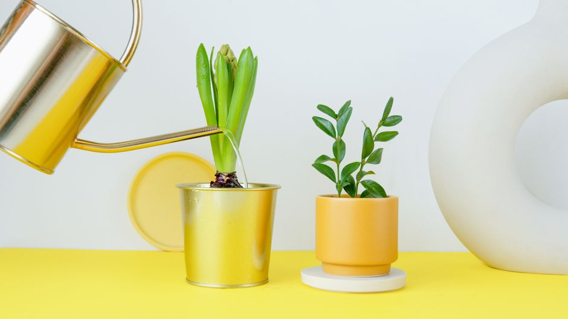

Les erreurs à éviter en matière d'éclairage pour les plantes d'intérieur

Photo: Artem Podrez / Pexels
La lumière est le premier facteur de santé d'une plante d'intérieur. Les erreurs sont fréquentes, mais elles se corrigent facilement dès qu'on observe la plante.
Erreur 1 : la placer en plein soleil derrière une vitre
Une fenêtre orientée au sud ou à l'ouest peut brûler les feuilles de plantes comme le pothos, le calathea ou la fougère. Les signes sont des taches brunes ou blanchâtres et des feuilles qui sèchent. Éloignez la plante de la vitre ou filtrez la lumière avec un voilage. Les plantes grasses, les cactus et l'aloès supportent mieux le soleil direct, surtout après une adaptation progressive.
Erreur 2 : croire que « faible lumière » signifie « pas de lumière »
Le zamioculcas, la sansevieria ou le pothos tolèrent un éclairage faible, mais ils poussent mieux avec de la lumière naturelle indirecte. Dans une pièce sans fenêtre, aucune plante ne survit longtemps sans lampe de culture.
Erreur 3 : déplacer la plante trop souvent
Changer sans arrêt une plante de place la stresse. Si vous la déplacez, faites-le progressivement : elle peut perdre des feuilles pendant quelques semaines.
Erreur 4 : oublier que la lumière change avec les saisons
En hiver, la lumière diminue beaucoup : rapprochez les plantes d'une fenêtre et arrosez moins. En été, protégez-les des heures les plus chaudes.
Erreur 5 : mal utiliser la lampe de culture
Une lampe LED conçue pour les plantes se place à la distance indiquée par le fabricant, avec une durée d'allumage régulière (souvent 10 à 14 heures par jour). Une lampe trop proche ou trop puissante brûle les feuilles.
Les signes à surveiller
- Tiges longues et pâles qui s'étirent vers la fenêtre : manque de lumière.
- Taches brunes sèches : trop de soleil.
- Feuilles qui jaunissent partout : cherchez aussi du côté de l'arrosage.
Une plante d'intérieur toxique pour vos animaux (pothos, philodendron, zamioculcas) reste toxique à n'importe quelle lumière : placez-la hors de portée.
Produits recommandés
En tant que Partenaire Amazon, je réalise un bénéfice sur les achats remplissant les conditions requises.